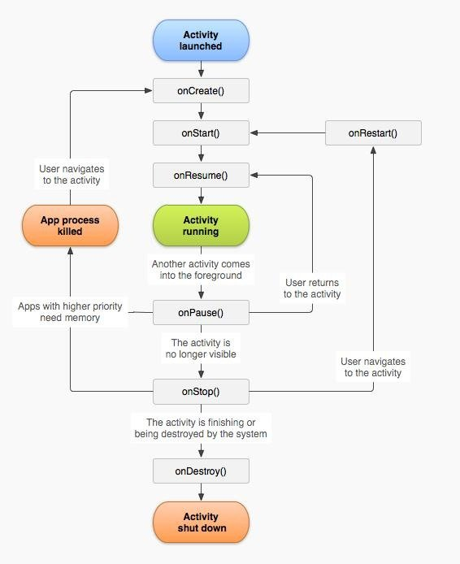
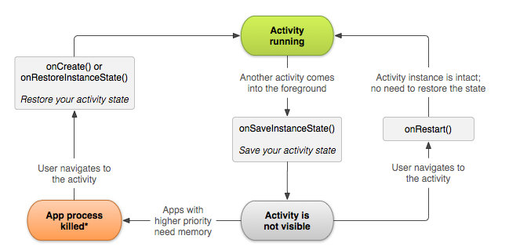

多个Activity生命周期的交互
除了用户退出activity和在activity中调用finish()方法外，activity会因为一些特殊情况而被destroy（比如内存不足、横竖屏切换），这个时候就需要保存一些信息，供activity下次启动时使用。
onSaveInstanceState()方法会在activity被意外关闭（如横竖屏切换）或者有可能被意外关闭（如被其他activity覆盖，这事如果内存不足，被覆盖的activity有被系统销毁的可能）时被调用，可以用它来保存一些有用的数据，这些数据保存在一个Bundle对象中。onSaveInstanceState()会在onStop()之前，或者onPause()之前被调用。
onSaveInstanceState()默认会存储用户界面组件的所有信息，比如在用户EditText中输入的字符串。
onRestoreInstanceState()方法可以用来取出onSaveInstanceState()方法保存的数据，只有再activity意外destroy之后重新create，这个方法才会被调用。
当然也可以在onCreate()中取得onSaveInstanceState()保存的数据，但是取出前要加条件判断。因为activity被创建时，onCreate()一定会被调用，但Bundle对象不一定会被传进来

有些情况下，我不希望activity配置改变时onCreate()方法被调用，因为onCreate()方法中都是一些初始化的工作，重复执行onCreate就会重复初始化。比如我不希望横竖屏改变时去执行onCreate()方法，那我可以这样做：
<activity>标签中添加属性android:configChanges="orientation|screenSize"（在Android 4以后，一定要加上screenSize）正常情况下，当配置改变时，activity会被销毁，然后重建，但是当添加上面这样的代码后，activity不会被销毁（不仅没有销毁，连onPause()方法都没执行），而是直接行onConfigurationChanged()方法，这样的话，自然不会有重复初始化的情况发生了。
configChanges属性的表格如下：
| 值 | 说明 |
|---|---|
| "mcc" | IMSI 移动国家代码（MCC）发生改变 — 检测到 SIM 卡并更新了 MCC。 |
| "mnc" | IMSI移动网络代码（MNC）发生改变——检测到 SIM 卡并更新了 MNC。 |
| "locale" | 地区发生改变——用户选择了新的语言（用于文本显示）。 |
| "touchscreen" | 触摸屏发生改变（通常不可能发生）。 |
| "keyboard" | 键盘发生改变 — 比如用户插入了外接键盘。 |
| "keyboardHidden" | 键盘功能发生改变 — 比如用户让硬键盘显示出来。 |
| "navigation" | 导航手段（轨迹球/D-Pad）发生了改变（通常不可能发生)。 |
| "screenLayout" | 屏幕布局发生了改变 — 可能是由于激活了其他显示屏。 |
| "fontScale" | 字体缩放倍数发生了改变 — 用户选择了新的全局字体大小。 |
| "uiMode" | 用户界面模式发生了改变 — 可能是由于用户把设备放进桌面/车用底座里，或者是变成了夜间模式。请参阅 UiModeManager 。自API 级别 8 开始加入。 |
| "orientation" | 屏幕方向发生了改变 — 用户旋转了设备。注意： 如果应用程序的目标版本是 API 级别 13 以上的话（由 minSdkVersion 和 targetSdkVersion 属性定义），且须同时声明“screenSize" 参数，因为设备在横向/竖向切换时 screenSize 参数也会发生改变。 |
| "screenSize" | 当前可用的屏幕尺寸发生改变。这表示当前可用的屏幕大小发生了改变，与当前屏幕长宽比例有关，因此这会在用户改变了纵横方向时发生。不过，如果用户程序的目标版本是 API 级别 12 以下时， Activity 将总是自行处理本参数的变化（即使在 Android 3.2 以上版本中运行，本参数的变化也不会导致 Activity 的重启）。自 API 级别 13 开始加入。 |
| "smallestScreenSize" | 屏幕的物理尺寸发生了改变。这种变化与屏幕的方向无关，因此只会在屏幕真实的物理大小发生变化时才会发生，比如切换到外接显示器。本参数的变化和 smallestWidth 参数 的变化相呼应。不过，如果应用程序的目标版本是 API 级别 12 以下， 则 Activity 将总是自行处理本参数的变化（即使在 Android 3.2 以上版本中运行，本参数的变化也不会导致 Activity 的重启）。自 API 级别 13 开始加入。 |
| "layoutDirection" | Layout 的方向放生了改变。 例如，从左到右（LTR）变成了从右到左（RTL）。 自 API 级别 17 开始加入。 |
发出intent后没有可以启动的Activity，那发出这个intent的应用程序会崩溃。
但是使用AlarmManager和PendingIntent则不会，不知道因为AlarmManager还是因为PendingIntent
显式
Intent(Context packageContext, Class<?> cls)
Intent intent = new Intent();
intent.setClass(Context packageContext, Class<?> cls)
或intent.setClassName(Context packageContext, String className)
或intent.setClassName(String packageName, String className)
或intent.setComponent(ComponentName component)
隐式
Intent(String action)
Intent intent = new Intent()
intent.setAction(String action)
A启动B，B在结束时会返回信息给A
这里不能使用startActivity()了，而是要使用startActivityForResult();
startActivity(Intent intent,int requestCode);这个requestCode相当于A给B取的一个idsetResult(int resultCode,Intent intent)这里resultCode一般使用Activity.RESULT_OK，Activity.RESULT_CANCELED等，当然也可以使用自定义的值onActivityResult(int requestCode, int resultCode, Intent data); 重写这个方法ActivityRecord、TaskRecord、ActivityStack
一个task就是一个任务，这是一个Activity的集合，可以使用Android下面的多任务切换按钮来切换最近的任务。回退栈只有一个，用来管理task。
默认情况下，一个activity在哪个task中启动，这个activity就在哪个task中，并且在这个task中走完自己的生命周期
每个Activity都有taskAffinity属性（自然是在manifest中设置），这个属性指出了它希望进入的Task。注：仅仅设置了taskAffinity属性的话，这个属性不会起到作用，activity还是进入启动它的task中
如果一个Activity没有显式的指明该Activity的taskAffinity，那么它的这个属性就等于Application指明的taskAffinity，如果Application也没有指明，那么该taskAffinity的值就等于包名。而Task也有自己的affinity属性，它的值等于它的根Activity的taskAffinity的值。
想要activity进入其他task，首先要在<activity>中设置taskAffinity属性，表明它希望进入的task，然后在<activity>中设置其他属性（或在启动它的intent中设置flag）
这个看看就好，具体还是要看源码，毕竟有的activity会监听返回键，所以不能只凭activity的具体表现来得出结论 在一个app中启动另一个app，比如在便笺中把所选文字发送短信，此时便笺app会启动短信app。此时按下返回键，则回到便笺app。从activity的切换动画中可以看到这两个activity属于同一个task
设置的<activity>属性如下
| Application | Activity | taskAffinity | allowTaskReparenting |
|---|---|---|---|
| application1 | Activity1 | com.winuxxan.affinity | true |
| application2 | Activity2 | com.winuxxan.affinity | false |
我们看到了什么现象？没错，本来应该是显示Activity2，但是我们却看到了Activity1。实际上Activity2也被加载了，只是Activity1重新宿主，所以看到了Activity1。按下返回键就能看到activity2
附录：与task有关的一些属性
taskAffinity属性只在两种情况下起作用
第一种就是上面说到的，当一个 activity 的 allowTaskReparenting 属性设为 "true"。
第二种是当启动 activity 的 intent 包含了 FLAG_ACTIVITY_NEW_TASK 标志。
如果用户长时间离开某个 task，系统将会仅保留一个根 activity，而把其它 activity 都清除掉。 当用户返回 task 时，只有根 activity 会被恢复。 系统之所以这么处理，是因为经过了很长时间后，用户是要放弃之前进行的工作，返回 task 是为了开始新的工作。
你可以利用 activity 的某些属性来改变这种方式：alwaysRetainTaskState
如果 task 中根 activity 的此属性设为 "true" ，则默认的清理方式不会进行。 即使过了很长时间，task 中所有的 activity 也都会保留在栈中。clearTaskOnLaunch
如果 task 中根 activity 的此属性设为 "true"，则只要用户离开并再次返回该 task，栈就会被清理至根 activity。 也就是说，正好与 alwaysRetainTaskState 相反。用户每次返回 task 时看到的都是初始状态，即使只是离开一会儿。finishOnTaskLaunch
此属性类似于 clearTaskOnLaunch ，只是它只对一个 activity 有效，不是整个 task。 这能让任何一个 activity 消失，包括 根 activity。 如果 activity 的此属性设为 "true"，则只会保留 task 中当前 session 所涉及的内容。 如果用户离开后再返回 task，它就不存在了。
getCallingPackage()和getCallingActivity：可以获得启动这个 Activity 的程序包名，或者是 Activity 名。前提是必须使用startActivityForResult()来启动
| 属性 | 取值 | 作用 |
|---|---|---|
| screenOrientation | portrait；landscape | Activity 方向 |
| label | 字符串 | Activity 自定义的名字 |